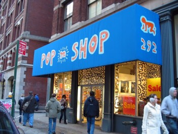
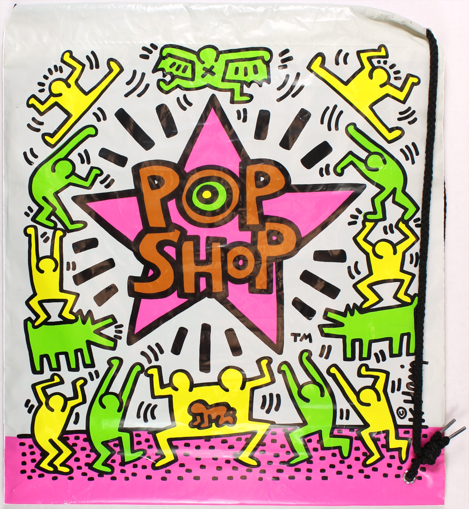
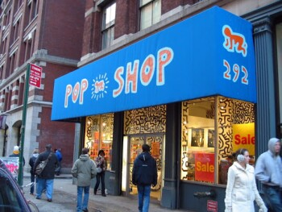

Pop Up Shop

In April 1986, Pop Shop opened in Soho, selling shirts, posters, and other items showing Haring's work. This made Haring's work readily accessible to purchase at reasonable prices. Having achieved what he wanted, which was "getting the work out to the public at large," Haring completely stopped drawing in the subways. He also stopped because people were taking the subway drawings and selling them.
Some criticized Haring for commercializing his work. Asked about this, Haring said, "I could earn more money if I just painted a few things and jacked up the price. My shop is an extension of what I was doing in the subway stations, breaking down the barriers between high and low art." The Pop Shop remained open after Haring's death till 2005; profits went to the Keith Haring Foundation.


The Pop Shop was far from Haring's only effort to make his work widely accessible. Throughout his career, Haring made art in subways and on billboards. His attempts to make his work relatable can also be seen in his figures' lack of discernable ages, races, or identities. By the arrival of Pop Shop, his work began reflecting more socio-political themes, such as anti-Apartheid, AID awareness, and the crack cocaine epidemic.
In April 1986, Pop Shop opened in Soho, selling shirts, posters, and other items showing Haring's work. This made Haring's work readily accessible to purchase at reasonable prices. Having achieved what he wanted, which was "getting the work out to the public at large," Haring completely stopped drawing in the subways. He also stopped because people were taking the subway drawings and selling them.
Some criticized Haring for commercializing his work. Asked about this, Haring said, "I could earn more money if I just painted a few things and jacked up the price. My shop is an extension of what I was doing in the subway stations, breaking down the barriers between high and low art." The Pop Shop remained open after Haring's death till 2005; profits went to the Keith Haring Foundation.
The Pop Shop was far from Haring's only effort to make his work widely accessible. Throughout his career, Haring made art in subways and on billboards. His attempts to make his work relatable can also be seen in his figures' lack of discernable ages, races, or identities. By the arrival of Pop Shop, his work began reflecting more socio-political themes, such as anti-Apartheid, AID awareness, and the crack cocaine epidemic.